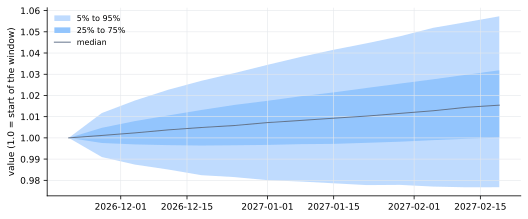
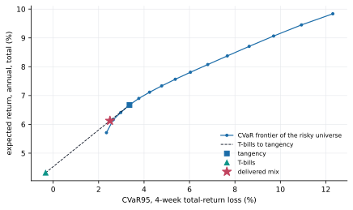

This site documents a personal research project. Nothing here is investment advice or a recommendation to buy or sell any security. The portfolio shown is a model portfolio; no real money is invested. Backtested and projected figures are hypothetical and do not predict future results.
Startup recap: the go-live strike of 2026-11-20
This recap is frozen: every number on it comes from this folder (2026-Q4-startup), written when the recap was created and time-stamped with it. Model portfolio, no real capital. Model estimates are hypothetical.
Verify this recap. This recap folder is frozen. Its manifest lists the SHA-256 of every frozen file; the manifest itself is time-stamped.
- Manifest SHA-256:
003199a34d29e7239404c58435f36c0744deffcfbe5d75c91e42e2637ea320cf(13 files) - RFC 3161 time stamp (freetsa): Nov 23 09:29:34 2026 GMT, file MANIFEST.sha256.tsr
- RFC 3161 time stamp (digicert): Nov 23 09:29:34 2026 GMT, file MANIFEST.sha256.digicert.tsr
- OpenTimestamps: MANIFEST.sha256.ots, status complete
- Files: MANIFEST.sha256, STAMP.json, snapshot.html (the page as frozen), chains in tsa/
Commands (in a copy of this folder):
PowerShell: Get-FileHash .\MANIFEST.sha256 -Algorithm SHA256
macOS/Linux: shasum -a 256 MANIFEST.sha256
RFC 3161: openssl ts -verify -in MANIFEST.sha256.tsr -data MANIFEST.sha256 -CAfile tsa/freetsa-cacert.pem -untrusted tsa/freetsa-tsa.crt
RFC 3161: openssl ts -verify -in MANIFEST.sha256.digicert.tsr -data MANIFEST.sha256 -CAfile tsa/digicert-root.pem -untrusted tsa/digicert-chain.pem
OTS: ots verify MANIFEST.sha256.ots (or upload it at opentimestamps.org)What is committed
| Item | Value |
|---|---|
| Data cutoff (go-live close) | 2026-11-20 |
| Weekly returns through | the 2026-11-20 bar |
| Treasury curve and T-bill rate | 2026-11-20 close |
| Credit spread series | dated 2026-11-19 |
| Forecast window | 2026-11-20 to 2026-12-31 |
| First 4-weekly check / first re-strike | 2026-12-18 / 2027-06-04 |
| Rebalance rule | Every 4th Friday the book is checked: if any holding, the T-bill sleeve included, is more than 5 percentage points from its target, the whole book goes back to target; the target itself is re-estimated every 6 months. |
The allocation
| Ticker | Name | Sleeve | Target | At go-live |
|---|---|---|---|---|
| USMV | iShares MSCI USA Min Vol Factor ETF | Equity | 10.0% | 10.0% |
| LQD | iShares iBoxx $ Investment Grade Corporate Bond ETF | Credit | 19.2% | 19.2% |
| HYG | iShares iBoxx $ High Yield Corporate Bond ETF | Credit | 19.2% | 19.2% |
| CWB | SPDR Bloomberg Convertible Securities ETF | Credit | 3.2% | 3.2% |
| PDBC | Invesco Optimum Yield Diversified Commodity Strategy ETF | Real assets | 6.6% | 6.6% |
| GLD | SPDR Gold Shares | Real assets | 2.1% | 2.1% |
| DBMF | iMGP DBi Managed Futures Strategy ETF | Diversifiers | 16.4% | 16.4% |
| T-bills | Treasury bills (notional sleeve, 4-month bill rate) | Cash (T-bills) | 23.3% | 23.3% |
| Total | 100.0% | 100.0% |
Forecast for the window
| Forecast for the window | Value |
|---|---|
| Expected return (annual, total) | 6.13% |
| Volatility (annual, total): the committed vol forecast | 4.29% |
| CVaR95 (4-week total-return loss) | 2.50% |
| STARR (excess over T-bills, x sqrt(13)) | 0.18 |
| Sharpe ratio (ex ante, annual, excess over T-bills) | 0.42 |

Frontier snapshot

The rate in use
The T-bill rate in use is the 4-month Treasury bill from the U.S. Treasury par yield curve: 4.32% at the 2026-11-20 close. It is the rate the T-bill sleeve earns (weekly, at the previous Friday’s close / 52; the first live week, to the 2026-11-27 close, at the go-live rate) and the rate subtracted in every excess-return figure.
How it is graded
Grading compares the realized volatility of the model portfolio with the committed vol forecast (4.29%): the weekly-based ratio and the daily-based ratio beside it, each with the number of weekly observations it rests on. There is no pass/fail threshold. Complete live weeks are counted since go-live: no sample statistic is shown before 13 complete live weeks, so the 2026 Q4 recap shows “–”; from the 2027 Q1 recap on, each quarterly grade is shown with its own number of weeks beside the cumulative grade since go-live. The pre-stated readings of the selection rule are also reported then: realized vs predicted 4-week CVaR95 and volatility of the mix, realized excess return over T-bills of the mix, turnover at every re-strike, and the share w.
Commentary
The model portfolio is now live. Tracking starts from the go-live close.